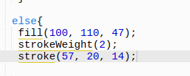

Hi, my name is Jesse and i'am in tenth grade and currently taking a computer science class. The topic for this round was to create an art piece called generative art that invloves art which consists of various types of art such as circle art, condition art, loop art, and funtion art, and today i will be explaing to how how all these art pieces fucion well what steps you have to take in order to properly use those art pieces. As you can see at the bottom of my page i have taken a screenshot of my finial art piece that i have created using java script, html, and loops in order to make my art piece change colors and how your able to balance the speed of the colors.
Circle art is the first step to generative art this teaches you the basics and gets you fimilar on how to draw all sorts of shapes. So the first step in every art page you create is to make draw function tag "draw = funtion() {" this tag helps your document know that you will be creating an image on your page. Then you will add a code called ellipse "ellipse() ;" and this elimate will hell you create ellipses based on a center coordinate, both x and y axis. As you can see in my circles art piece i placed an ellipse of "(0, 0, 30, 30);" which created a half circle on the top left corner of the x axis.
As you can see in the image above the ellipse allowed me to create a half cirlce on the top left corner of the x axis depending on the numbers i chose to put inside parameter. Another function that will improve for circle is a tag called StrokeWight "StrokeWeight ()" this helps you determine how thick you want your black line of your half circle to be.
In the image above i put the strokeWeight to 100 in side the parameter which allowed my circle to get thicker, thigher your number is the bigger your circle will get, and lower your number is the smaller your circle will get.
The third tag is called "fill ()" and this tag allows you to chagge the color of your circle.
in the image above it shows a example of how the fill tag is used. As you can see i put (100, 20,24) inside the parameter of the fill tag for the which gave my circle to have sort of like a red velvet color.
oo the last tag is called "var xPos, and var yPos" and what this tag does is allows you to put your circles across the x and y axis in what ever which pattern you want.
In the images above I added the var x and y tags under the ellipse tag in order for my cirlces to move from the top left corner of the x axis down the middle and touching the bottom right corner of the y axis. and the number 20 next to the xPos and yPos tags indiagte how many circles will be rerouting into that perticullar pattern. In addition this is the last step to the circles checkpoint in my html class, after learning about this checkpoint it gave me an idea of how i will be able to change the shape, color, and size, of my art pieces and will soon help me with future projects.
Conditional Art the second step to the generative art checkpoint. In this checkpoint it teaches you how to have the ability to paste shapes all over your art page depending on where you clique your mouse while hovering over the and y axis. Also this checkpoint allows you to make your images change color depending where you clique your mouse while hovering across the x and y axis.
The first step is of course create a "draw = funtion()" tag in order for your file to help indicate that your are going to create an art piece. Next is to create an ellipse using mouse x and mouse y tags."

In the images above i decided to put an ellipse tag with the mouseX and mouseY tags in order to be able to place the circles anywhere and however ever i want while using my hosue to hover over both x and y axis. Also you see numbers next to the mouseX and mouseY tags, this gives the shape its size and length, you can change it to what ever pleases you without a problem.
Next step is to create a mouseX tag that looks like this "if(mouseX > 200) this tag helps the circle change color when your mouse hovers over the y axis because it the tag it is saying that 200 is greater than mouseX which means if your mouse passes the x axis your circle will start to change color. .
In the images above the white circle means the mouse is hovering over the x axis and the blue circle means the mouse is hovering over the y axis.Now this is where it gets intresting you can also have your circle change coor of you hover over the x axis my simply
In the images above when the mouse is on the x axis the circle tends to change to the color green meanwhile when the mouse is on the y axis the circle changes to the color blue. In this checkpoint this helped me figure out how i will be able to make my final art piece more effective when using the mouse to help my art piece change its color.
This is the third checkpoint in our html class which gives us clues on how to make circles change color and how to make them go in certain patters.


In the image above is clearly shows alot of codes i used in order to make my loop art piece come out great. For example the fill and stroke tags were both used to help create the circles color and pattern. The ellipse tag was used to help form its size in order for my loop art piece to come out looking semi decent instead of mismatched circles popping up everywhere around my page, that wouldn't look so great. The var tags were used to determine which way the circles were going to be facing towards. In addition i added the framerate tag to help balc]ance the speed of the color changing in my circles. And the backround tag is just some extra detail that i added to make my piece look a little bit better than it was before.
This last checkpoint is called function art, and this by far is the place where i had most fun in. In the checkpoint you can literally create whatever you want like a bear or a smiley face just use you imagination. Although this was the most fun checkpoint in my poinion it was byfar the one that gave me a hard time. I eventually worked my way around it and slowly got the concept of this playlist. In my funtion art piece i was given the instrutions to use all sorts of codes. And i had to add additional tags in order for my bears to change its color constantly.
In this art piece i used an ellipse tags which were used to give the bears the shape of its ears, face, and eyes. As you can see the line tag was used to give the bear its mouth. The var tags were both used to help our file know we are creating a bear and also to help understand that the bears are eligable to be placed in both x and y axis. The mouseClicked tag was used to help indicate that wherever we clique the mouse either on the x and y axis a bear will appear where the mouse was at and is to be placed there. In addition i added a var tag at the bottom of the page to make my bears change color because that var tag basically indicates that whenever i place a bear it was to make it redraw itself and help it change its color. I also added the framerate tag to help balance the speed of the color changing on the bears. This checkpoint really halped me on my final project and because of this i was able to pretty much create my art piece with hardly any problems.
My final product was to create an art piece concisting of all four art chekpoints, and mine had just that. My art piece consicts of circle art, loop art, functional art, and conditional art. I wanted to gather everyting thing we learned about in generative art and wanted turn it all one big colorful world as a memeory of everyhing ive learned and what ive done in order to get past my struggles. This class has really motivated me into never giving up because i honestly thought i would never be able to grasp the concept of codeing but after weeks of trying and trying i finally know whats its like to properly use codes and create all sorts of amazing things. If thers one one thing ive learned from that class is to always try your best and good things will come your way. I really enjoy this class and look foward to doing more cool and awsome stuff like this in the future.v